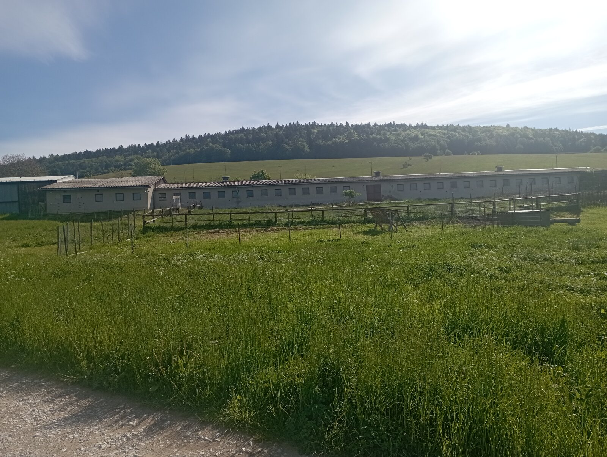

Priestranná poľnohospodárska budova s výmerou 810 m², kovový prístrešok 130 m² a súvislý blok pozemkov s rozlohou takmer 1,5 hektára. Výborná dostupnosť — len 2 km od diaľnice D1, výjazd Behárovce.
Mám záujem Pozrieť fotografieJeden celok pripravený na okamžité užívanie — budova, prístrešok a pozemky tvoria súvislý oplotiteľný areál na okraji obce.
Ponúkame na dlhodobý prenájom murovanú hospodársku budovu (pôvodne kravín, súpisné číslo 59) v obci Pongrácovce. Budova má zastavanú plochu 810 m², pozdĺžny pôdorys s radom okien po celej dĺžke a samostatnými vstupmi, vďaka čomu je priestor ľahko rozdeliteľný na viacero prevádzkových častí. K budove patrí kovový prístrešok s plochou približne 130 m², vhodný na parkovanie techniky alebo kryté skladovanie.
Súčasťou prenájmu je súvislý blok pozemkov s celkovou výmerou približne 14 560 m² — dvory, trávnaté plochy aj orná pôda. Celý areál je prístupný priamo z miestnej komunikácie a zvláda aj prejazd nákladných vozidiel a poľnohospodárskej techniky.

Areál je variabilný — uplatnenie nájde poľnohospodár, remeselník aj firma hľadajúca lacné skladové zázemie s výbornou dostupnosťou.
Budova bola postavená ako kravín — je pripravená na chov dobytka, oviec, kôz či koní vrátane priľahlých pasienkov.
810 m² krytej plochy plus prístrešok — ideálne na uskladnenie materiálu, plodín, krmiva alebo tovaru.
Krytá aj vonkajšia plocha pre stroje a náradie, s bezproblémovým prejazdom veľkej techniky.
Dlhá budova s viacerými vstupmi umožňuje zriadiť dielňu, spracovanie dreva či inú ľahkú výrobu.
Súčasťou bloku je orná pôda a trvalé trávne porasty — vhodné na pestovanie aj produkciu krmiva.
Máte iný zámer? Napíšte nám — podmienky prenájmu aj rozsah areálu vieme prispôsobiť dohodou.
Napíšte nám, radi vám areál osobne ukážeme a dohodneme podmienky.
Kontaktovať majiteľa